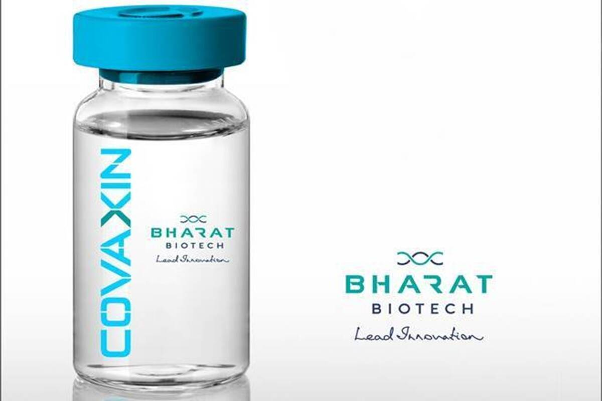
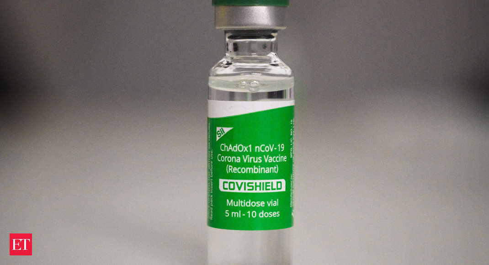

Vaccines
A COVID‑19 vaccine is a vaccine intended to provide acquired immunity against severe acute respiratory syndrome coronavirus 2 (SARS‑CoV‑2), the virus that causes coronavirus disease 2019 (COVID‑19).
Prior to the COVID‑19 pandemic, an established body of knowledge existed about the structure and function of coronaviruses causing diseases like severe acute respiratory syndrome (SARS) and Middle East respiratory syndrome (MERS). This knowledge accelerated the development of various vaccine platforms during early 2020. The initial focus of SARS-CoV-2 vaccines was on preventing symptomatic, often severe illness. On 10 January 2020, the SARS-CoV-2 genetic sequence data was shared through GISAID, and by 19 March, the global pharmaceutical industry announced a major commitment to address COVID‑19.
The COVID‑19 vaccines are widely credited for their role in reducing the severity and death caused by COVID‑19.[4][5] Many countries have implemented phased distribution plans that prioritize those at highest risk of complications, such as the elderly, and those at high risk of exposure and transmission, such as healthcare workers.
Two Types of Vaccines:
Covaxin
Covaxin (codenamed as BBV152) is an inactivated virus-based COVID-19 vaccine developed by Bharat Biotech in collaboration with the Indian Council of Medical Research - National Institute of Virology. As of October 2021, 110.6 million people in India have received Covaxin. On 3 November 2021, the World Health Organization (WHO) validated the vaccine for emergency use. A phase 3 clinical trial with 25,798 participants found that the vaccine is 64% (95% CI, 29–82%) effective against asymptomatic cases, 78% (65–86%) effective against symptomatic disease, 93% (57–100%) effective against severe disease, and 65% (33–83%) effective against the Delta variant.
Covishield
The Oxford–AstraZeneca COVID-19 vaccine, codenamed AZD1222, and sold under the brand names Covishield and Vaxzevria among others, is a viral vector vaccine for prevention of COVID-19. Developed in the United Kingdom by the Oxford University and British-Swedish company AstraZeneca, using as a vector the modified chimpanzee adenovirus ChAdOx1. The vaccine is given by intramuscular injection. Studies carried out in 2020 showed that the efficacy of the vaccine is 76.0% at preventing symptomatic COVID-19 beginning at 22 days following the first dose, and 81.3% after the second dose. A study in Scotland found that, for symptomatic COVID-19 infection after the second dose, the vaccine is 81% effective against the Alpha variant (lineage B.1.1.7), and 61% against the Delta variant (lineage B.1.617.2)
